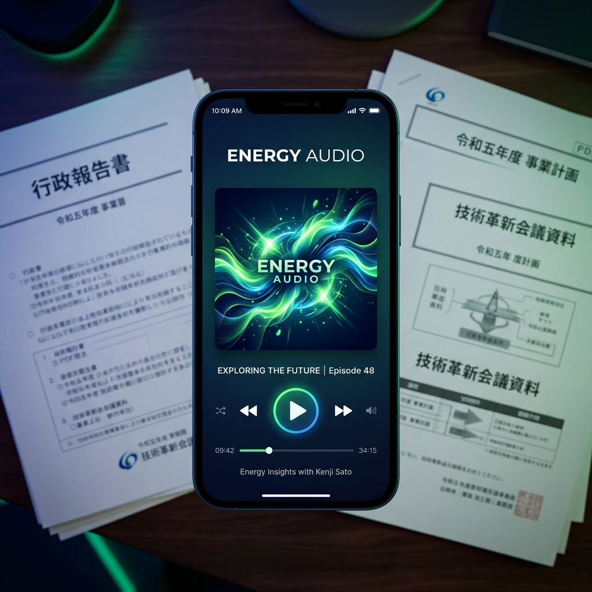

エネルギー業界の「今」を追うのは、
限界にきていませんか？
経産省（METI）やOCCTOの最新資料がアップされても、読む時間がない。
「何が決まったのか」「今後の課題は何か」だけを端的に知りたい。
専門的な審議会の議事録やスライドを読み解くのが精神的・時間的負担。
情報の波を、
インテリジェンスの源に変える。
圧倒的なタイムパフォーマンス
複雑な資料も、要点だけを抽出した音声コンテンツに。移動中や作業中に「ながら聴き」で最新動向を瞬時にキャッチアップ。
プロ納得の深いインサイト
単なる文章の要約ではありません。最新のAIモデルが文脈を理解し、「ビジネスへの影響」という視点でコンテンツを生成します。
重要な更新を見逃さない
重要拠点を24時間365日監視。新しい情報が発表され次第、即座にAIが解析・ポッドキャスト化。鮮度を逃しません。
AUTOMATION ARCHITECTURE
完全自動化された、
配信システムの裏側
最新のスクレイピング技術と生成AI（NotebookLM / LLM）を融合させた、独自のアーキテクチャがこの速さと質を実現しています。
01
Smart Scraping（24時間監視）
官公庁の重要拠点を監視し、資料がアップロードされた瞬間にコンテンツを取得。#Python #Playwright
02
AI Analysis Pipeline（高度な解析）
数千枚の資料をNotebookLMや最新LLMが読み込み、「何が決まったか」を瞬時に抽出。#NotebookLM #LLM
03
Automated Broadcasting（即時配信）
解析結果をRSSフィードに統合し、主要プラットフォームへ即座に同期。#Vercel #CloudflareR2
こんな方におすすめです
事業立案・開発担当者
再エネ・EV事業の開発や市場進出に関わるビジネスパーソン。
市場アナリスト
電力トレーダーやエネルギー市場の動向を追い続ける専門家。
研究者・学生
政策動向を網羅的に効率よくキャッチアップしたい学術関係者。
テクノロジーで、エネルギーの未来を
もっとクリアに。
今すぐEnergy Audioをフォローして、エネルギー業界の最前線を「耳」で体験してください。